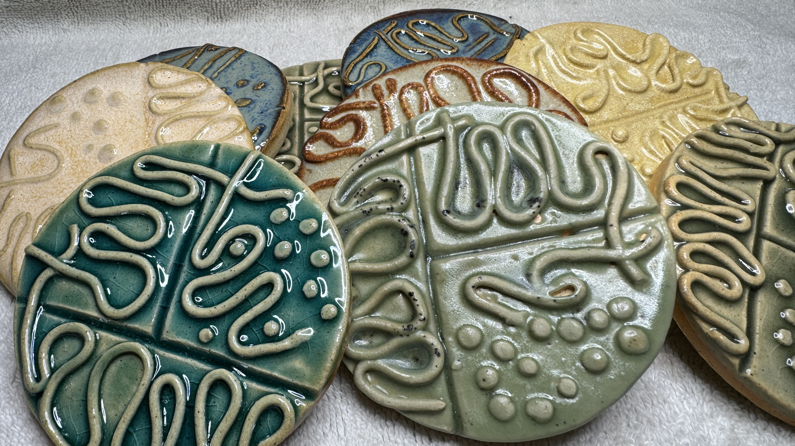

Projects#
Below are some extra-curricular projects I have worked on that showcase how I combine art and science to communicate my research to both scientific and broader audiences.
Research-related#
Microbiome Diversity R Shiny App#

Microbiome Diversity R Shiny App is a proof-of-concept AI-powered interface that users can use to explore, analyze, and visualize microbiome data.
Tools used:
R (data analysis, visualization)
RShiny (web application development)
HuggingFace API (LLM)
Experimental Schematic Figure Designs#
Microbiome research experiments can be complicated involving multiple and combined treatment groups, longitidunal sampling, and multi-omic data. Taking inspiration from subway maps, I have designed figures to clearly and effectively communicate complex experimental designs and results. Below are some examples of figures I have designed for my research.
Gut Microbiome Centered Framework#

This poster a work in progress and an attempt to bridge public health and social equity issues by using what I’m calling a gut microbiome-centered framework. The gut microbiome (GMB)—a diverse community of microorganisms in the gastrointestinal tract—plays a crucial role in human health by aiding digestion, modulating the immune system, and protecting against pathogens. However, its composition and function are shaped by systemic, environmental, and individual factors, which can be exacerbated or mitigated by social determinants of health.
A GMB-centered framework operates under the assumption that GMBs are a reflection of myriad influences an individual experiences at a given moment in time. The GMB-centered framework offers an ecological approach to help researchers, public health officials, and policymakers identify and address health disparities by asking the questions: “How is the GMB impacted by a particular issue? And, what factors contribute to this issue?”. By considering these questions, the GMB-centered framework offers a holistic, ecological approach to understanding health disparities and guiding equitable public health interventions.
Tools used:
Adobe Illustrator & Affinity Designer (graphic design)
Creative#
GutMichaelBiome#

GutMichaelBiome is a play on words of “Gut Microbiome and Michael.” To express my creativity and passion for sharing and communicating microbiome science through humor, I created a sticker-of-the-month club, where each month I send 20+ (and counting) members a new sticker that I designed based on a microbiome or microbiology-related topic. You can find more information about the club and how to join on the GutMichaelBiome website.
Virtual Fish#

Virtual Fish (GitHub) is a science communication game developed in collaboration with Dr. Stephen Atkinson (lab website) and Austin Hammer in the department of Microbiology at Oregon State University. Virtual Fish is a tamagotchi-like game where players take care of a fish by feeding it, cleaning its tank, and administering it medicine whenever it gets an infection.
Tools used:
C#, Unity (software development)
GitHub (version control, game hosting)
Ceramics#
{kind=link}

As a token of my appreciation for guest seminar speakers, collaborators, and friends, I created these ceramic petri dishes. Each one is slightly unique in the streak pattern and glaze coloring.
Tools used:
Clay (art)
Glaze (art)
Misc. tools (rolling pin, cookie cutters, extruder)
Return to top.